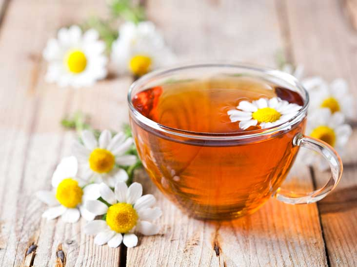
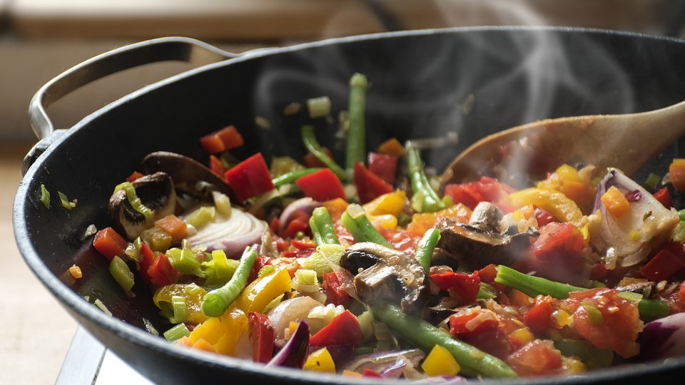
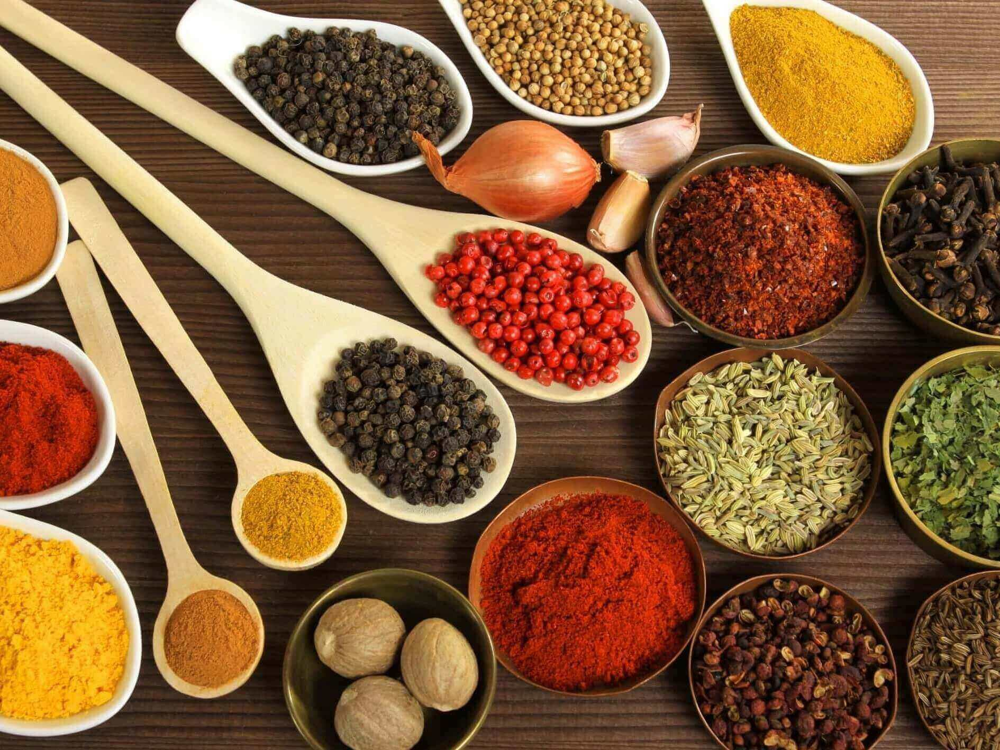
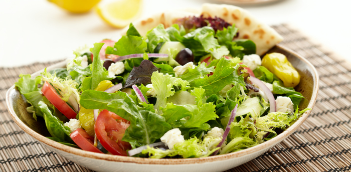

|
Unos tečnosti |
Preporučeno je da se na svakih 25 kg težine pije 1l tečnosti. Na primer, ukoliko odrastao muškarac teži 100 kg, on bi dnevno trebalo da pije 4 litre tečnosti. |
|  |
Vrste tečnosti |
U okviru dnevnog unosa tečnosti, preporučuje se da udeo vode bude 1/2, dok udeo nezaslađene limunade i diuretskih čajeva kao što su rastavić, maslačak, breza, itd., bude 1/4. |
 |
Kafa |
Kafu (tursku, nes, espreso) obavezno konzumirajte bez mleka i šećera, maksimalno 2-3 male kafe dnevno, obavezno uz čašu vode. |
|  |
Priprema hrane |
Kuvana hrana se sprema bez zaprške (brašna, ulja); izbaciti jake začine, vegetu, kari,biber. Na ulju se ništa ne prži i ne peče, a kašika maslinovog ili lanenog ulja se dodaje na kraju pripreme jela. Meso se priprema kuvano na pari, kuvano u vodi (malo vode), na roštilju, zavijeno u aluminijumsku foliju, na teflonu ili prženo na foliji za prženje bez ulja, u vatrostalnoj posudi ili zapečeno u rerni. Ribu pripremate isto kao i posno meso (kuvate, pečete na roštilju, u foliji za prženje itd.). Obavezno odstranite kožicu jer sadrži velike količine holesterola! |
|  |
Dozvoljeni začini |
Alkoholno/vinsko sirće, kuhinjsku so i vegetu izbacite iz upotrebe! Alternative su vam: jabukovo sirće ili limunov sok, kalijumova ili himalajska so i biljni začine (mirodjija, origano, peršun, majčina dušica, začin IN). Kečap i pavlaku izbacite iz upotrebe (kao dodatak hrani i salatama možete koristiti kašičicu senfa). |
|  |
Kako i kada jesti salatu |
Uz svaki obrok konzumirajte što veću porciju sveže salate, uvek začinjenu maslinovim uljem, jabukovim sirćetom ili limunovim sokom. U salatu od npr 1,5 kg kupusa dovoljno je dodati 1 ravnu kašiku himalajske ili kalijumove soli, 1,5 kašiku maslinovog ulja i 5-6 kašika jabukovog sirćeta. U salatu uvek dodajte 1 supenu kašiku lana ili chia semenki. Pripremićete ih tako što ćete ih prethodno potopiti u dressing koji ste napravili za salatu kako bi nabubrile, pa nakon toga prelijte salatu. Sveža salata (kupus, crveni kupus, zelena salata, rukola, iceberg) sadrži dijetna vlakna (celulozu-koja ne podleže varenju u digestivnom traktu), pruža produžen osećaj sitosti, čisti creva, reguliše LDL holesterol, gubitak kilograma i smanjuje procenta masti u telu. |